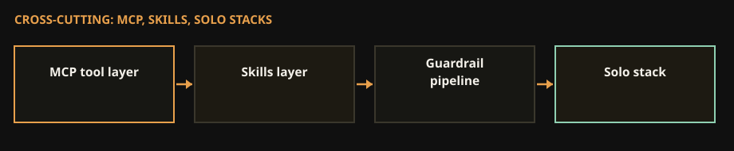
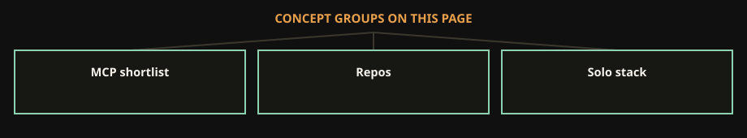

Cross-cutting: MCP, skills, solo stacks
Tools differ. Patterns converge. This page holds the shared stack: MCP servers, skills, plugins, guardrails and the solo operator build.

MCP shortlist with consensus in November 2026 round ups
| Server | Job | Note |
|---|---|---|
| GitHub MCP | Repos, issues, pull requests, Actions, security alerts | Remote OAuth or local Docker forms |
| Playwright MCP | Browser acts via access snapshots | Microsoft server. Snapshot form beats screenshot form for agent reads |
| Chrome DevTools MCP | Traces, network, console | Pairs with UI verify work |
| Context7 | Current library docs per version | Fixes stale train data on APIs |
| Filesystem | File access in allow list folders only | Reference server, still kept |
| Vendor servers | Sentry, Supabase, Figma, Linear, Stripe, Vercel, Notion, Atlassian | Pick per stack, not per hype |
Stale tutorial trap. Old reference servers for GitHub, GitLab, Postgres, Puppeteer, Redis, Slack and SQLite sit in archive state. Kept reference core: Filesystem, Git, Fetch, Memory and Sequential Thinking. Year 2026 shift: remote HTTP transport with OAuth beats pasted API keys. Old SSE transport sits in deprecated state.
Config pattern, with placeholder secrets only
claude mcp add <name> -- <start command> claude mcp add --transport http <name> <url>
Team form: check a .mcp.json file into a repo. All members gain the same tool set. Scope each token to least rights. Read only rights win where a task needs no write act. Never place a real secret in a site, a repo file or a prompt.
Skills and plugins
A plugin packs skills, commands, agents, hooks and MCP config for one command install via a marketplace. A skill folder holds one SKILL.md file with a name, a short text and a body. That folder form loads in Claude Code, Codex, Cursor, Gemini CLI, Copilot, Antigravity and Muse Code per sources in this build.
Pocock design rule: user called skills run flow. Model called skills hold discipline. A user called skill can call model called skills. A user called skill must never call a second user called skill. Predictability beats clever chains.
Repo guide
| Repo | What the repo does | Install pattern in README |
|---|---|---|
| obra/superpowers | A full software method for coding agents. Brainstorm, worktree, plan in 2 to 5 minute tasks, subagent build with two stage review, test driven work, review, branch finish. | Claude Code plugin install from the official marketplace, or from the superpowers marketplace. Install per tool for other tools. |
| mattpocock/skills | 27 skills for real engineers. Grill, spec, tickets, test driven work, bug diagnosis and architecture deep work. Fixes four failure modes: wrong build, word waste, broken code, mud design. | Plugin install, then one setup command per repo. Setup asks tracker, labels and docs place. |
| JuliusBrussee/caveman | Token compression skill, proxy and middleware. Agents say less and read less. Log and test output shrinks before a model read, with full text kept for recall. | Skills add command, then a caveman command per session. Full install forms sit in README. |
| Nutlope/hallmark | Anti slop design skill. Four verbs: build, audit, redesign, study. Audit scores a target and edits no file. Study pulls design DNA to a portable design file. | Skills add command per a July 2026 article. |
| cursor/plugins, pstack folder | Lauren Tan playbook set. A poteto-mode front door picks one of 23 playbooks, copies steps to a task list, and fires skills as steps trigger. 34 skills and 24 principles per one README read. | Cursor plugin add, then a setup command. Claude Code form uses a marketplace add and a plugin install. |
| modelcontextprotocol/servers | Official MCP reference servers. Kept core listed in the MCP note on this page. | Per server start commands in each server README. |
Savings claims for caveman come from repo own tests. Treat all such numbers as vendor claims. Low for savings
Hallmark theme and gate counts conflict across sources. This site prints the verb model only, no counts.
Vibe coding to agentic engineering
Karpathy coined vibe coding in February 2025: describe, accept, watch acts. The 2026 fix in practitioner sources adds a spectrum. Vibe form fits prototypes with optional checks. Agentic engineering adds firm specs, rule files and auto verification.
Google New SDLC frame via a summary: Agent equals Model plus Scaffold. Most teams spend too much on model choice and too little on scaffold.
Guardrail pipeline: spec first, test driven work or oracle tests, linters and type checks and security scans, coverage gates, pre commit hooks and CI, human review of acts and key diffs.
Security note: a guardrail article sums studies with about 40 to 45 percent of AI code in security tests with flaws. Present that range as studies cited by practitioners, not as a count from this site.
The canonical loop
Grill and spec -> Plan, with a second agent review on hard tasks -> Execute in a worktree or sandbox -> Test vs an oracle -> Review by a fresh context agent -> Fix loop -> Ship via pull request and an approval gate -> Capture the lesson in a rule file, a lint, a skill or an eval
Solo one person army stack
Consensus in four solo founder guides from October and November 2026: one 20 dollar agent plan, GitHub Free, Vercel Hobby and Supabase Free. Total near 20 dollars per month to ship real products. Add paid tiers one layer at a time as limits bite.
Full stack adds that recur: Cursor for edit work, Linear for plans, Stripe for pay, Resend for mail, PostHog for product data, and a research model as a thought partner.
One operator frame: split RAM, disk and GPU roles. RAM: a fast thought partner model. Disk: a file system as the record. GPU: a coding agent run time with custom skills. A file out of the file system does not exist for the system.
Research pipeline pattern
- Subagents search in parallel and compress finds.
- A lead agent builds a synthesis.
- A separate citation or verify step maps each claim to a source.
- A gap list names claims with no source.
This site used that same pipeline. The Sources page forms the audit trail.

Visual map of this page
Three views of one page: a Mermaid flow for work order, a markmap for concept groups, and a read guide for the flow.
Mermaid source, for offline read
flowchart LR A[Spec first] --> B[TDD or oracle] B --> C[Lint, types, scans] C --> D[CI and hooks] D --> E[Human review of key diffs] E --> F[Ship]
How to read the flow diagram. Step 1: start at the left box. Step 2: follow each arrow to the next stage. Step 3: at a branch box, read both paths before a choice. Step 4: a loop arrow means work returns for one more pass vs a test.
Markmap: concepts on this page
- Cross-cutting: MCP, skills, solo stacks
- MCP shortlist
- GitHub
- Playwright
- Context7
- Filesystem
- Vendor servers
- Repos
- superpowers
- pocock skills
- caveman
- hallmark
- pstack
- Solo stack
- One agent plan
- GitHub, Vercel, Supabase
- Near 20 dollars per month
- MCP shortlist